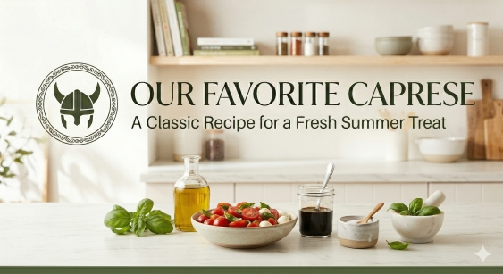

Caprese Salad

Home
Banana Bread
Caprese Salad
Spaghetti Carbonara
Classic Omlette
Homemade Guacamole
Classic Italiak Caprese Salad
The Caprese salad is a simple Italian masterpiece that celebrates the colors
of the Italian flag: red, white, and green. It relies on the absolute freshness
of its ingredients rather than complex cooking techniques. Perfect as a light
appetizer or a side dish, this salad is a refreshing staple of the Neapolitan
region.
Ingredients
- 2 large, ripe vine tomatoes
- 8 oz fresh mozzarella cheese (preferably Buffalo Mozzarella)
- 1 bunch of fresh basil leaves
- Extra-virgin olive oil for drizzling
- Balsamic glaze or reduction
- Flaky sea salt and freshly cracked black pepper
Stepts to Prepare
- Slice the tomatoes and the mozzarella into 1/4-inch thick rounds.
- On a serving platter, alternate layers of tomato and mozzarella slices, overlapping them slightly.
- Tuck a fresh basil leaf between each layer of tomato and cheese.
- Drizzle generously with extra-virgin olive oil and a few drops of balsamic glaze.
- Season with sea salt and black pepper to taste. Serve immediately at room temperature.